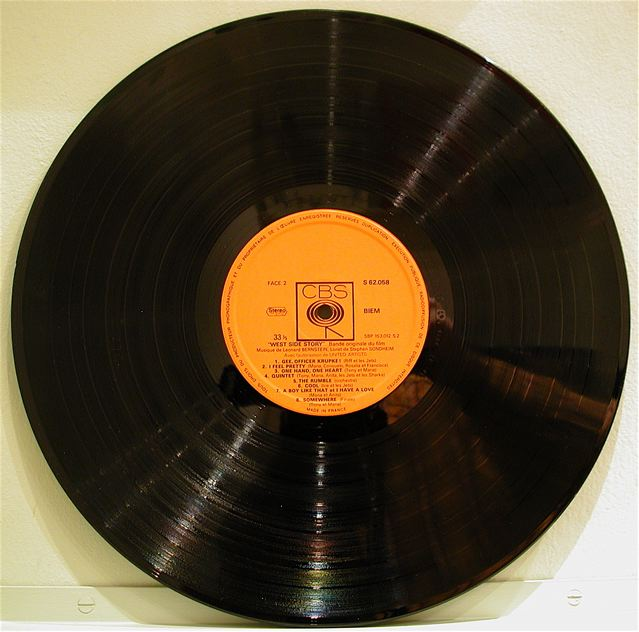

-->

Qu’écoutez-vous et quand ?
Visualisez vos habitudes de streaming sur les derniers jours
Légende
Delenda Carthago
Zoom +
-
Zoom -
<
-
>
Reset
Aide
Group15 - Projet DataViz 2021/22
Aide
Modifiez la période que vous visualisez avec les boutons Zoom + et Zoom -, ou en vous déplaçant avec les boutons > et <.